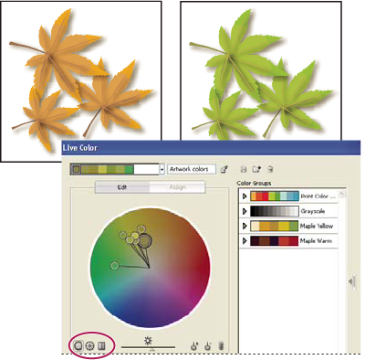
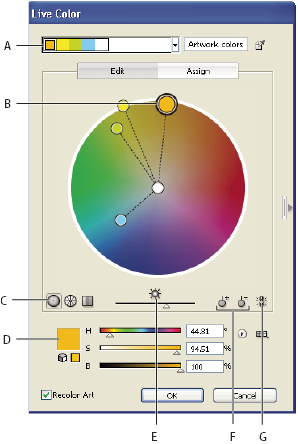
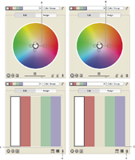
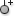

Edit colors in the Live Color dialog box
Editing colors in the Live Color dialog box is a convenient way to globally adjust the colors in selected artwork. It is especially useful when global colors weren't originally used in the artwork's creation. You can edit colors and color groups in the Live Color dialog box and apply your edits to selected artwork, or save the edited colors for later use.
When editing colors, you use the smooth color wheel, the segmented color wheel, or the color bars.

- Smooth color wheel
- Displays hue, saturation, and brightness in a smooth continuous circle. Each color in the current color group is drawn on the wheel inside a circle. This wheel lets you choose from numerous colors with great precision, but it can be hard to see individual colors because every pixel is a different color.
- Segmented color wheel
- Displays colors as a set of segmented color patches. This wheel makes it easy to see individual colors, but doesn’t provide as many colors to choose from as the continuous wheel.
- Color bars
- Displays only colors from the color group. They appear as solid bars of color that you can select and edit individually.
For a video on creating, editing, and experimenting with color groups in Live Color, see www.adobe.com/go/vid0059.

- A.
- Base color as it appears in Harmony Rule menu
- B.
- Base color as it appears in color wheel
- C.
- Color display options
- D.
- Color of selected color marker or color bar
- E.
- Show saturation and hue on Wheel
- F.
- Add and subtract color marker tools
- G.
- Unlink harmony colors
 Edit a color group using a color wheel
Edit a color group using a color wheel
- If you have selected an object on the artboard, click
Recolor Art to preview the colors on the artwork. If you don’t want
to recolor the artwork, deselect Recolor Art before closing the
dialog box, or click Cancel to close it.
Note: To edit the colors of the selected artwork, click Get Colors From Selected Art
 .
. - To confine colors to a swatch library, click the Limits
The Color Group To Colors In A Swatch Library button
 and
choose a library from the list.
and
choose a library from the list.
 or
Out Of Web
or
Out Of Web  buttons
as necessary.
buttons
as necessary.Edit a color group using the Color Picker
You can use the Color Picker to change colors in a color group.
-
In the Live Color dialog box, do one of the
following:
-
Double-click a wheel marker.
-
Double-click a color bar.
-
Double-click a color in the Color Groups list.
-
Double-click a color in the active colors display at the top of the dialog box.
-
Click the color swatch to the left of the color sliders.
-
- Save the edits by doing one of the following:
-
To save the edited colors as a new group, type a new name in the name text box at the top of the dialog box, and then click New Color Group .
 .
. -
To save the edits to the original color group, click Save Changes To Color Group
 .
.
-
Edit an individual color in a color group

- A.
- Color wheel view of linked colors
- B.
- Color wheel view of unlinked colors
- C.
- Color bars view of linked colors
- D.
- Color bars view of unlinked colors
- E.
- Colors linked, click to unlink
- F.
- Colors unlinked, click to relink
- In the Live Color dialog box, select the color group you want to edit and click Edit.
- Click the Unlink Harmony Colors icon
 .
. - Do one of the following:
-
Drag the color marker you want to edit to set a new color.
-
Click the Display Color Bars button . Click the color bar you want to change and manually edit the color values, or double-click the color bar and choose a new color in the Color Picker.
-
Right-click a color marker or color bar and pick a new shade.
-
- To relink the colors so that the markers move again according to the newly defined harmony rule, click the button again.
Randomly change color order or saturation and brightness
In the Live Color dialog box, you can explore random variations of the current color group by using the Randomly Assign Brightness And Saturation button and the Randomly Change Color Order button.
- In the Live Color dialog box, select a color group.
- Click Edit, and then click Display Color Bars; or click Assign.
- Do either of the following:
-
To randomly change the brightness and saturation of the current color group while retaining the hues, click Randomly Change Color Order
 .
. -
To shuffle the order of the current color group, click Randomize Saturation And Brightness
 . Use
this button when recoloring artwork to quickly explore the different
ways artwork can be recolored with the current color group.
. Use
this button when recoloring artwork to quickly explore the different
ways artwork can be recolored with the current color group.
-
Globally edit saturation, brightness, temperature, or luminosity
Add or remove colors in a color group
- In the Live Color dialog box, click Edit.
- View the color group using a color wheel, not the color bars.
- Do either of the following:
-
To add a color to the color group, click the Add Color Tool button

, and then click in the color wheel on the color you want to add. If you click on the line of an existing color marker, the new marker moves with that marker. -
To remove a color, click the Remove Color Tool button , and then click the color marker you want to remove. You cannot remove the base color marker.
-
 Select
a color group in the Color Groups list and click Delete
Select
a color group in the Color Groups list and click Delete  .
.